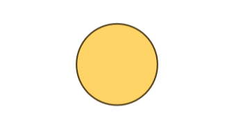
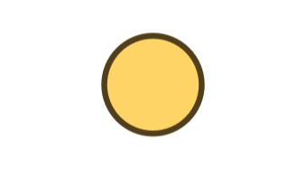
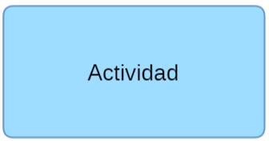
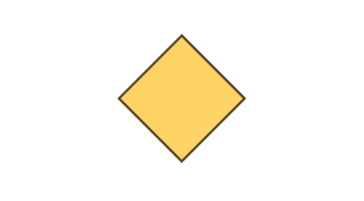
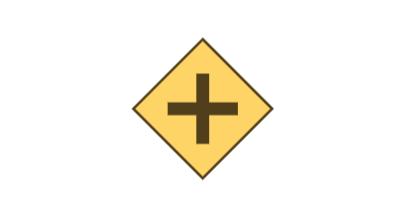
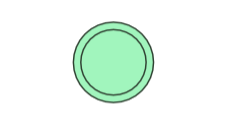
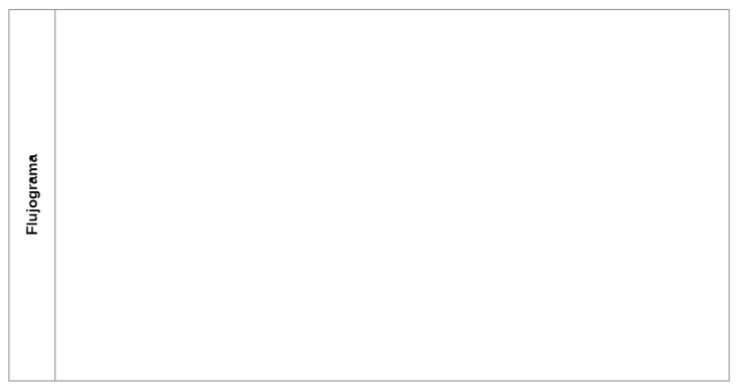
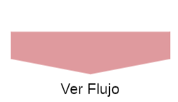

Es una representación gráfica, donde se identifican los Macroprocesos de una empresa y recoge la interrelación de la organización, enmarcados en tres ejes principales:
El Mapa de Procesos se clasifica en 3 tipos de procesos.
Procesos Estratégicos
Son aquellos procesos destinados a definir y controlar
las metas, políticas y estrategias de la organización. Están ligados a factores
claves, por lo que las decisiones tomadas en estos procesos pueden afectar a la
compañía en su totalidad.
Procesos Operacionales
Están directamente relacionados con la ejecución
de las actividades principales del negocio de la compañía, que finalmente se
enfocan en brindar el servicio al cliente.
Procesos de Soporte
Son los encargados de dar apoyo a todos los
procesos estratégicos y operacionales.
Niveles de Procesos
EL Mapa de procesos se compone de 4 niveles:
➤
Macroprocesos
➤
Procesos
➤
Etapas
➤
Flujograma
Macroproceso
Es un conjunto de Procesos, que tienen como finalidad velar por el cumplimiento de los objetivos del macroproceso.
Proceso
Los procesos tienen como finalidad entregar valor a la compañía, mediante un conjunto de actividades y recursos interrelacionados, que transforman los elementos de entrada en elementos de salida, aportando valor para el cliente interno, externo y en otros procesos. Todo lo anterior nos permiten coordinar acciones, para entregar un producto y/o servicio de calidad.
Etapas
Para facilitar el entendimiento del proceso se crea el nivel de Etapas, que consiste en divivir el proceso en diferences fases, para que el lector pueda comprender el proceso de manera amigable. Las Etapas continen secuencia, decripciones, responsables, entradas, salidas y sistemas.
Flujograma
Cada proceso es representado gráficamente mediante un flujograma donde se identifican las actividades, actores, secuencia logíca, instructivos y sistemas/plataformas utilizados en el proceso.
Definiciones Generales
Definiciones de términos de Gestión por procesos.
Objetivo
Finalidad
o meta que tiene un Macroproceso/Proceso.
Alcance
Define
los límites, lo que incluye y/o los requisitos necesarios para lograr realizar el Macroproceso/Proceso.
Descripciones
Información y explicación lógica que tienen las Etapas, procesos y Macroprocesos
Dueño del proceso
Persona o rol responsable del Macroproceso/Proceso, tiene carácter de jefatura y vela por los resultados del Macroproceso/proceso. Puede interferir en como ejecutar las actividades y en su secuencia lógica.
Gestor del proceso
Persona o rol responsable de la correcta ejecución diaria de los procesos. Da las directrices a los ejecutores del proceso.
Ejecutores o actores
Se refiere al rol o función que cumple un usuario o entidad
dentro de un subproceso. Puede ser un cargo, unidad funcional, cliente, entidad
externa a la empresa, sistema informático e incluso una unidad operacional. En
los diagramas BPMN, el actor es quien ejecuta las actividades en el carril.
Sistema, plataformas, aplicaciones
En los procesos se identifican las herramientas informáticas que interactúan los ejecutores en una determinada actividad.
Actividades
Alude a una acción ejecutada por un rol durante un período de tiempo determinado dentro del proceso.
Entradas y salidas
Entradas: Son los Input necesarios para iniciar un proceso. Pueden ser: Materiales, insumos, información entre otros procesos.
Salida: Son los output que generan resultados
o productos de un proceso. La salida de un proceso, suele ser una entrada de otro proceso.
Código
Se crea un sistema de códigos para diferenciar los niveles tanto de macroprocesos, procesos, etapas y flujograma. Estos códigos permiten al usuario reconocer los Procesos estratpegicos, Operacionales o de Soporte.
KPI's
Los KPI's o Key Performance Indicator, son indicadores claves de rendimiento de un proceso.
Tareas
Corresponde a la descripción de la actividad, en acciones específicas.
Simbología de Diagramación

Inicio o Entrada
(Input) Elemento gráfico para dar inicio en un flujograma pueden ser del tipo, materiales, insumos, información, necesidades, entre otros.

Salida o Fin
(Output) Elemento gráfico para dar termino a un flujograma ya sea con resultado, producto.

Actividad
Simbología para identificar las actividades dentro de un Flujograma.

Pregunta
Identificar una pregunta dentro del flujograma el cual debe tomar 1 solo camino.

Paralelo
Simbolo para distribuir multiples caminos dentro del flujograma.

Condición
Elemento que se utiliza para indicar un evento de condición para que pase el flujo.

Carril
Frame que utilizado para enmarcar donde debe ir el Flujograma.

Ver Flujo
Botón para redirigirse al flujograma.
Proceso / Etapa
Simbología para identificar procesos o etapas dependiendo del nivel de su Ubicación.
RACI
Matriz de asignación de responsabilidades
La Gestión por Procesos incluye como una herramienta importante la matriz RACI, la cual se enfoca en determinar como un rol interactúa con una actividad dentro de un proceso enmarcado en una temporalidad para dar cumplimiento al objetivo del proceso. De forma gráfica, queda plasmado dentro del flujograma como se muestra a la imagen.
R
La Letra R representa al Responsible o Responsable y es quién de la ejecuta la actividad.
A
La letra A hace referencia al Accountable o Autoridad, y es quién aprueba/valida la ejecución de la actividad.
C
La letra C representa al Consulted o Consultor, y es a quién se le consulta su opinión, solicita información o ayuda para que el ejecutor pueda realizar la actividad de mejor manera.
I
La letra I representa al Informed o Informado , y es quién se le debe estar informado de que se ejecutó la actividad.
BPM
Business Process Management
BPMN
Business Process Model and Notation
BPMS
Business Process Management Suite
Mapa de Procesos
Aquí encontrará los procesos levantados por el área de Gestión de Procesos y Proyectos de Division Minería Cummins Chile